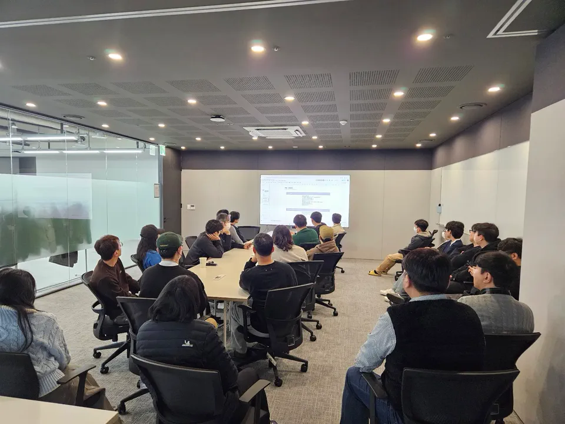
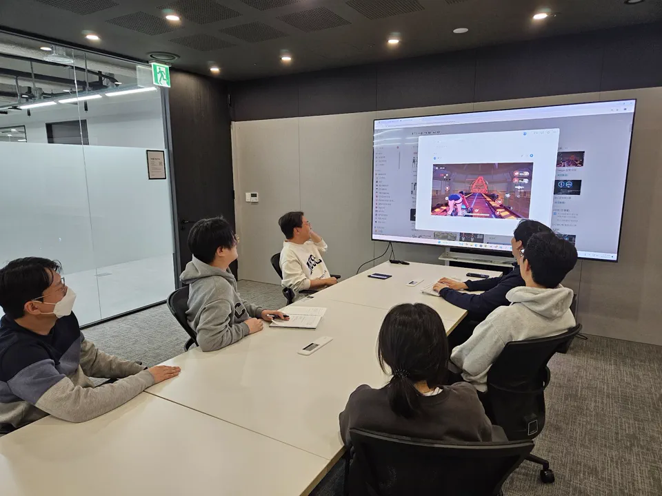
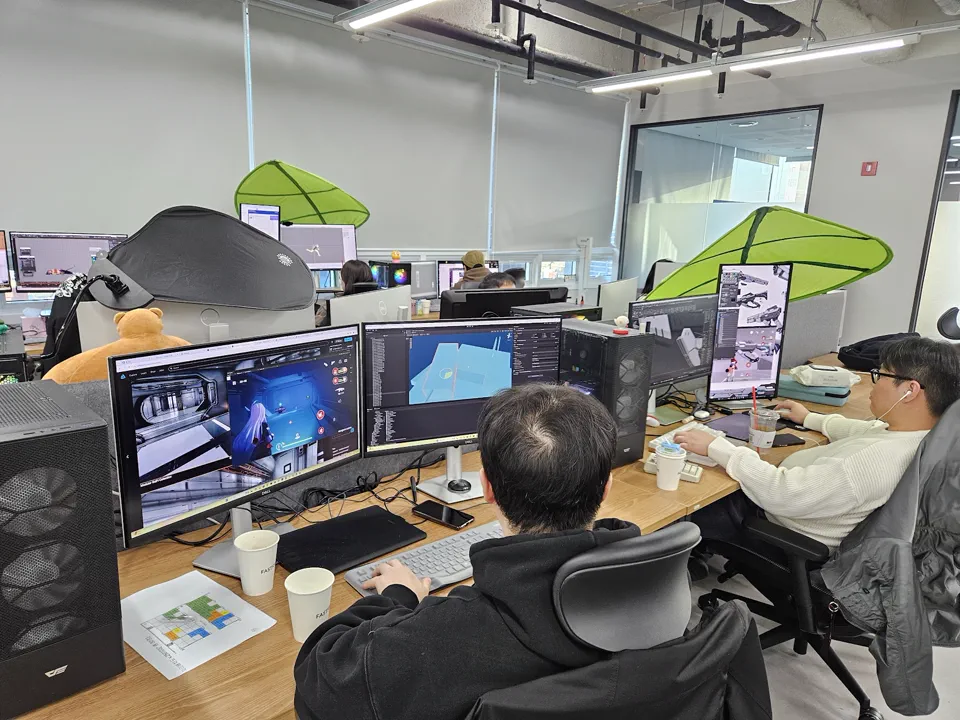

법인설립
(주)카카오벤처스 FI 투자
(주)코나벤처파트너스 FI 투자
벤처기업인증획득
Studio
We build gameswe’re proud of.
GPUN은 우리가 만드는 게임에 무한한 자부심을 갖는 게임 개발사입니다.
서브컬처의 감성과 메카닉 액션의 밀도를 결합해,
전 세계 유저가 오래 기억할 수 있는 게임을 만들고 있습니다.
- Vision
- Game Pride Is Unlimited
- Focus
- Subculture
Mechanic action
Global experience - Project
- Terrarium
ProjectMOVE - Goal
- Games we’re proud to show
Leadership
최주홍
경력 25년의 디렉터 출신 대표 시프트업, 엔씨소프트 등 개발력을 인정받은 곳에서 디렉터를 맡아 히트작 다수 리딩 및 서비스.
우수한 개발진과 성공 경험 시프트업, 엔씨소프트, 넷마블 등 국내 대형 개발사에서 히트작을 개발한, 평균 20년 경력의 리드급. 프로젝트 셋팅부터 라이브까지 두루 경험하고 성공한 핵심 노하우
외부에서 인정하는 가치 시드부터 카카오벤처스, 코나벤처파트너스 등 국내 최정상 VC로부터 투자 유치에 성공. 최근 웹젠, 스마일게이트 및 정부에서도 가치를 인정.
- 지피유엔
- 테라리움, 무브
- 데브시스터즈
- 쿠키런 더 다키스트 나이트
- 이키나게임즈
- 메이플스토리2(외주)
- 시프트업
- 승리의 여신 니케
데스티니 차일드 - 엔씨소프트
- 프로젝트 혼
- SK아이미디어
- 마이크로볼츠
- 소프트맥스
- 마그나카르타 진홍의 성흔
History
WHO WE ARE
기술력과 재미의 조화를 바탕으로 글로벌 유저에게 전례 없는 플레이 경험을 제공합니다.
겁없이 새로운 재미를 빠르게 찾아내고 만들어내는 도전 정신으로 바탕으로
단순히 수익을 내는 것을 넘어 전세계에 자부심을 갖고 선보일 수 있는 마스터피스를 만듭니다.
(주)웹젠 FI 투자
(주)카카오벤처스 FI 투자
(주)코나벤처파트너스 FI 투자
(주)스마일게이트 동반성장 프로그램
한국콘텐츠진흥원 스타트업 투자연계 창업도약
Philosophy
Fun, Fast, Fearless
AI를 더 나은 결정과 더 빠른 제작, 더 과감한 도전의 엔진으로 삼아 GPUN만의 게임 개발 방식을 만들어갑니다.
AI는 개발 속도를 높이는 도구를 넘어, 더 나은 결정을 내리는 엔진입니다. 유사 장르를 AI로 분석하고 유저 경험을 검증하며, 디렉터의 직관이 빠지기 쉬운 함정을 걷어냅니다. 더 적은 시행착오로, 더 확실하게 재미에 도달합니다.
AI를 활용하여 기획서 오류를 체크하고, 리팩토링 기간을 30% 단축시키며, 캐릭터 제작 효율은 50% 향상시킵니다. 47명의 팀이 대형 스튜디오의 속도를 따라잡습니다. 이것은 목표가 아니라 GPUN에서 지금 일어나고 있는 일입니다.
AI가 게임을 어떻게 바꾸는지, 그 답을 가진 회사는 아직 없습니다. GPUN은 그 답을 가장 먼저 찾고 가장 빠르게 움직입니다. 2030년 개발 전 공정의 AI화를 향해, AI 시대 게임의 기준을 만드는 일에 우리는 망설이지 않습니다.
Expertise
Developmentexpertise
GPUN은 서브컬처 게임의 매력과 라이브 서비스의 구조를 이해하는 개발자들이 모인 스튜디오입니다. 기획, 아트, 프로그램, 전투, 연출, 운영까지 게임 개발의 전체 흐름을 이해하며 글로벌 시장을 향한 프로젝트를 만들고 있습니다.
- Subculture
- Character and world driven game development
- Launch
- Production, launch, and live-service experience
- Global
- Global one-build oriented planning
- Platform
- Mobile, PC, and console direction
Culture
We make gameswe’re proud to show.
GPUN은 혼자 빛나는 사람이 아니라, 함께 완성하는 사람을 중요하게 생각합니다.
아이디어를 나누고, 결과물을 검증하고, 더 나은 플레이 경험을 위해 끝까지 다듬습니다.
우리는 게임의 본질인 재미에 집중합니다.
플레이의 감각과 기억에 남는 순간을 찾습니다.

좋은 게임은 혼자 만들 수 없다고 믿습니다.
적극적인 커뮤니케이션과 존중을 바탕으로 일합니다.

끝까지 다듬고 완성하는 태도를 중요하게 생각합니다. 결과물을 보여줄 수 있을 때까지 계속 개선합니다.
